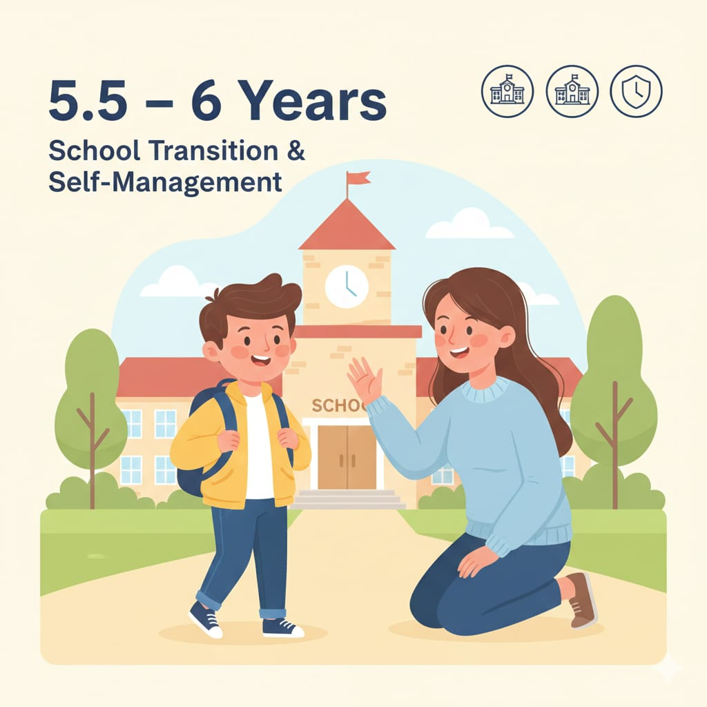

5.5 – 6 سنوات
مرحلة انتقال مهم: دخول المدرسة أو قربها. التركيز هنا على: **التكيف المدرسي + عادة الواجب + تحمل الخطأ + الاستقلال**.

مهم: الهدف مش “تفوق سريع”… الهدف “نظام + أمان نفسي +
عادة”.
مرحلة انتقال مهم: دخول المدرسة أو قربها. التركيز هنا على: **التكيف المدرسي + عادة الواجب + تحمل الخطأ + الاستقلال**.
